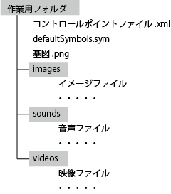
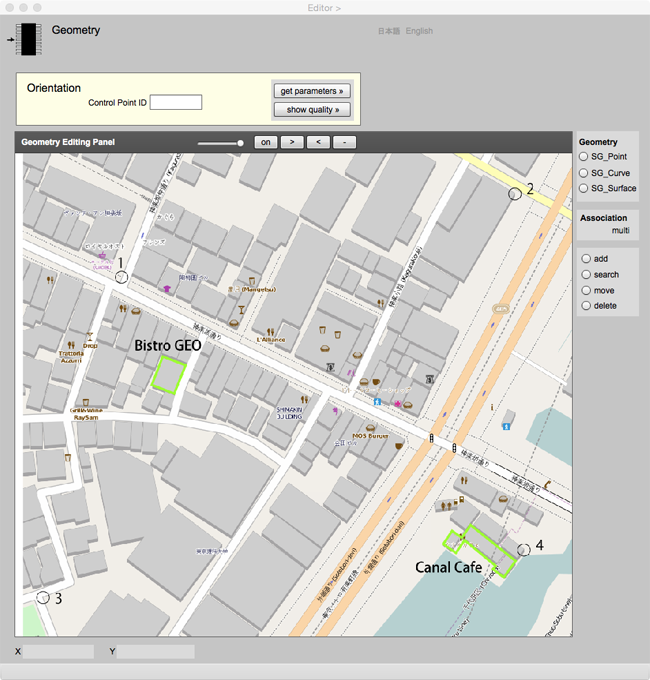
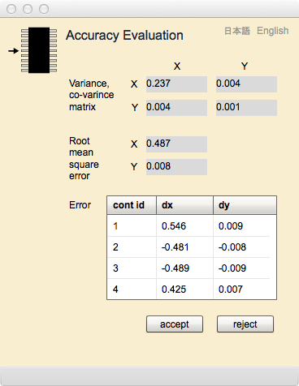
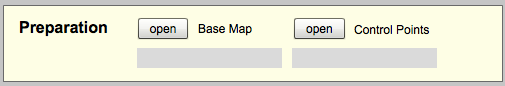
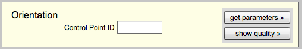
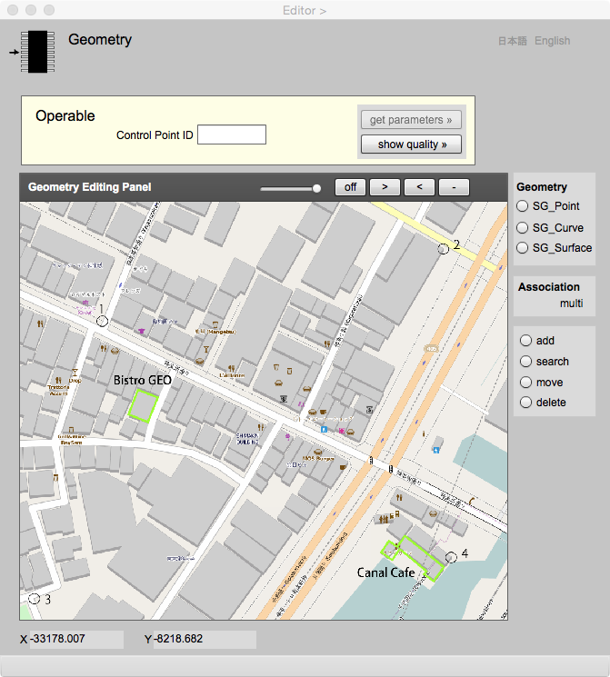

Geometry
幾何の編集
このページは，Editor との連携のもとで，幾何属性や地物同士の関連データの取得と編集を行うためにあります．ここでは，幾何属性について解説し，さらに，このページの操作手順を説明します．最後に表示欄とボタンそれぞれについて，説明します．なお，地物同士の関連については，主としてEditor ページで行いますので，そちらのテキストを読んで下さい．
幾何属性
幾何属性は，地物がもつ空間的な性質を記述するためにあります．地球上に存在する地物の多くは，点，線または面で表現することができます．例えば，一本一本の樹木は点で代表させることができるでしょうし，海岸線や行政界は線で代表させることができるでしょう．また，田畑や植生の分布範囲は面で表現できるでしょう．ところで一般に地形には凹凸があります．その凹凸を等高線で表すとすれば，高さと関連づけた線が使われます．また，ランダムに分布する，高さをもつ点群を元にして，内挿法で任意の高さを求めるということもあります．つまり，幾何属性は，地図として地物をグラフィックに表現するために使われますが，空間解析を行うためのデータとしても，使われます．
それでは，点，線，そして面はどのように記述するのでしょうか．また，幾何属性は点，線，そして面だけなのでしょうか．これから，幾何属性について，説明します．なお，gittokでは2次元までの幾何属性を扱います．ここでいう2次元とは，もとの図形を平面に変形できる，という意味です．例えば，球面を平面に変形することはできません．従って，球面は2次元ではないことになります．しかし，お椀のようなかたちは，伸ばして平面にすることができます．これは2次元です．細かい所を無視すれば，地表も2次元の平面に投影できます．つぎに，直線に変形できる単純な曲線は1次元です．さらに，点はそのまま0次元です．このような次元は位相次元と呼ばれます．これに対して (x, y, z)は３次元座標だ，というときの次元は，座標成分の数を示すことから，座標次元といわれます．
2次元までの空間に投影できる図形は点（０次元），曲線（1次元），曲面（２次元），そして，それらの組み合わせです．ここで，点，そして単純な線や面のことを単体 (simplex) と呼ぶことがあります．線の場合は交差箇所がないこと，面の場合は，さきほど説明したように，平面に投影できることが条件になります．単体を組み合わせた図形は複体 (complex) といわれます．水道管のネットワークなどは，複数の交点と複数の線でできる図形（グラフといいます）なので，1次元複体です．gittokでは，単体のことを幾何プリミティブ (geometric primitive)，複体のことを幾何複体(geometric complex)と呼んでいます．また，幾何属性は相互に関連性をもちます．このような，幾何属性のスキーマのことをgittokでは空間スキーマと呼んでいます．また，gittokでは地理情報標準 『JIS X 7107 空間スキーマ』にならって，単体は，自分の範囲を規定する境界を含まない（開いた単体），としています．そして複体は境界も含むと考えます．したがって，最も簡単な複体は両端点が一致する曲線と端点の組み合わせです．
空間スキーマ
空間スキーマは，幾何プリミティブと幾何複体からなりますが，それ以外に，プリミティブや複体を成り立たせるために必要な補助的なプリミティブを含みます．実際にgittokが使用している空間スキーマのなかで，基本となる構造を以下に示します．
図1.gittok の空間スキーマ
SG_Object（空間幾何オブジェクト ）
SG_Object は，幾何プリミティブ及び幾何複体の親になる空間スキーマ全体のルートクラスです．このクラスには，幾何要素であればおしなべてもたなければいけない属性が含まれています．
属性
id
別の要素と区別するための識別子です．インスタンスが発生するためびに，自動的に割り振られます．
featureID
幾何属性は，それを保持する地物インスタンスのIDをもちます．これによって，Geometry Editorで選択した幾何属性を含む地物を，Editor ページ上で見ることができるようになります．ただし，幾何属性が示す地物は一つだけなので，一つの幾何プリミティブが複数の地物インスタンスの属性になることはできません．しかし，地物が複数の幾何属性をもつことはできます．
attrbuteName
幾何属性は，それを保持する地物の，どの属性になっているかを，属性名で保持します．
SG_Primitive（空間幾何プリミティブ ）
SG_Primitiveは，幾何プリミティブのルートクラスです．属性はありません．
SG_Point（点）
SG_Pointは，位置を属性とする．最も単純な0次元の幾何プリミティブで，SG_Primitiveを継承します．
属性
position
点の位置を示す属性です．位置のデータ型は座標型 (Coordinate2)です．
関連
goOut
点は，樹木や街路灯の属性になるときは，孤立した存在（孤立点）になりますが，線の端点になる場合もあります．例えば，十字路では4本の線が一つの点を端点とします．端点から線をみると，出てゆく線と，入ってくる線に分類できます．端点が線の始点になる場合は，点から見れば線は，出てゆく線です．このような線の役割はgoOutになります．一つの点から，複数の線が出てゆく可能性があります．
getIn
点が線の終点になる場合は，点から見れば線は，入ってくる線です．このような線の役割はgetInになります．複数の線が，一つの点に入る可能性があります．
SG_Curve（曲線 ）
SG_Curveは，点から出て，点に入る座標列です．曲線というと，滑らかなカーブを思い浮かべると思いますが，gittokでは現在のところ，折れ線しか扱いません．ただし，将来，改良される可能性もあるので，カーブとしています．SG_Primitiveの属性を継承します．曲線は，自分自身でループを作って交差してはいけないとされています．交差する場合は，交差点で別々に分けます．
属性
shape
曲線を構成する，一つ以上の座標でできる座標列 (CoordinateArray)です．ただし，始点と終点は含みません．始点と終点の間を直線で結ぶ場合は，この属性は値をとりません．
関連
start
始点を示します．
end
終点を示します．
extend
この曲線を元に作られる，有向曲線への関連です．曲線はもともと，始点から終点への向きをもちます．しかし，後で説明するように，曲面の境界になるときは，逆向きであったほうが良い場合があります．そこで，向きを属性としてもつ曲線を使うと便利なときがあります．有向曲線は向きと，もとになる曲線への関連で定義されます．
SG_OrientableCurve（有向曲線）
これは，曲面の境界になる，向きをもつ曲線です．曲面の内側を左に見る方向が正，右に見る方向のときは，負になります．
属性
orientation
正の場合はtrue，負の場合はfalseになります．
関連
original
この有向曲線のもとになる曲線への関連を示す役割名です．
曲面 (SG_Surface)
曲面は線を境界とし、その内側を範囲とする，領域です．この面は，2次元なので，平面に投影できなければいけません．曲面というと，東京ドームの屋根のように，湾曲した面を思い浮かべますが，gittokでは当面，境界線もその内側も平面上にあるということにしています．SG_Primitiveを継承しますが，固有の属性はありません．
関連
exterior
曲面には境界があります．これは外側の境界です．境界は閉じた曲線，つまり輪になります．輪は，一つ以上の有向曲線の列で表現されます．
interor
これは内側の境界です．湖に島があるような時，また，家の内側にパティオのような庭がある時に，内側の境界が必要になります．内側の境界は，複数になる場合があります．
SG_Ring（輪）
曲面の境界は輪になります．輪は一つ以上の有向曲線の列で定義されます．輪は gittok では,右手系の座標系を使うとき，左回り（反時計回り）になるように作りますので，左側に面の内側を見る方向で進む有向曲線の向きはプラス，右に見るときはマイナスになります．しかし，一般のパソコンのスクリーン座標は左手系なので，進行方向右側が内側になります．そのような向きをもつ曲線のあつまりが輪です．
属性
element
一つ以上の有向曲線の列です．
Coordinate2（2次元座標）
座標とは，座標系で定義される複数の座標軸に沿って測られる，原点からの距離（成分といいます）の組です．gittokでは2次元までの空間を扱うので，座標の成分は２つあります．それでは，座標系とは何でしょうか．座標系とは，座標を与えるための基準で，次元の数だけの座標軸の定義からなります．ところで，ここでいっている次元は，幾何属性の次元（位相次元）とは異なり，座標成分の数のことを指します．このような次元は幾何次元といいます．座標及び座標系について学びたい場合は，講義用スライド「09 参照系」を見て下さい．
地上の位置を示す座標に，平面直角座標があります．限られた範囲であれば地表面を平面とみなすことができますが，その平面上の任意の位置を原点とし，互いに直交する座標軸をもうけ，同じ単位で測った，原点からの距離の組（xとy）で座標を表現するものです．地理情報技術では，これ以外に緯度経度があります．地球の形を回転楕円体で近似し，その重心を原点にとって，赤道からの角度で緯度，本初子午線から東向きに測った角度を経度とするものです．赤道と本初子午線が座標軸になり，その交点が原点になります．その位置は，アフリカの西側の海上にあります．
属性
x
x軸上の原点からの長さ．
y
y軸上の原点からの長さ．
dimenshion
次元の数．この場合は常に２である．
CoordinateArray（座標列）
座標列は一つ以上の座標の配列です．gittokでは，ArrayListという型を継承して表現しています．ArrayListは可変長の配列なので，任意の数の座標を入れることができます．
幾何編集
Geometry and Association ページは，幾何データ及び地物間の関連の取得と編集を行うためにある．Editor で生成される地物インスタンスと結びつけることによって，幾何データはインスタンスの空間属性になります．ここでは，幾何データの取得及び編集のための手順を解説します．
データ取得の準備
gittok では，幾何データは，地図から取得します．その地図はベースマップとか基図と呼び，平面直角座標系，またはUTM座標系（これらを平面座標と呼びます）に従うものとしています．
gittokでは，まず，作業を行うための作業用フォルダーを用意します．フォルダーの構成は以下の通りです．フォルダーの名前は任意です．自分の好きな名前を付けましょう．

図2. 作業用フォルダーの構成
ここで，コントロールポイントファイルとは，基図をスクリーンの表示したときのスクリーン座標と，地上の平面座標の変換パラメータを求めるために使う，コントロールポイントの平面座標が記述されたXML文書ファイルです．このファイルには，以下に示すような，XML形式の文書が入っています．
<IdentifiedCoordinateArray element="1,-32852.246,-8748.471,2,-32852.055,-8188.527,3,-33237.924,-8737.200,4,-33241.755,-8269.957" dimension="2"/>
ここで，IdentifiedCoordinateArrayというタグは，id付きの座標の列という意味です．element という属性を見ると（id，x座標，y座標）の列になっていることがわかります．このタグには座標の次元が2次元であることを示すために，dimenshionという属性も必要です．ちなみに，日本の平面直角座標系のx座標は縦座標，y座標は横座標です．なお，平面座標の詳細については講義用スライド「09 参照系」を参考にするといいでしょう．
次にdefaultSymbols.sym はデフォルト記号辞書です．これは，基図を使ってデジタイズした幾何を，記号としてどのように表示するか規定するファイルです．記号設計については，Cartographer ページで説明します．
基図は，幾何図形や注記など，データ取得用の情報を盛り込んだ地図です．上の図で拡張子は.pngとしていますが，.jpgでもかまいません．下の例では，OSMのサイトからコピーして印刷した背景図の上に以下の計測用情報を記入しています．
１．四隅にコントロールポイントの番号と位置を示す丸．丸の中心がコントロールポイントの位置．これは必須です．
２．データ取得の対象になる２棟の建物
３．建物の名前 (Bistro GEO, Canal Cafe)

図3. 簡単なベースマップの例
さて，準備のための操作は以下の通りです．
1. Editor で幾何属性を選択すると，Geometry ans Association が開きます．
2. Preparation が表示されていることを確認し，幾何データを取得するために，ベースマップをオープンします．
3. コントロールポイントファイルをオープンします．そると自動的に画面が標定用の画面になります．
これで準備は終わりです．

図4. 準備済みのGeometry and Association ページ
ベースマップの標定
標定とはこの場合，地図座標から地上の平面座標への変換パラメータと，変換の正確さをしめす分散・共分散行列などを求めることを指します．gittok ではアフィン変換（一次変換）のパラメータを最小二乗法で求めますので，３箇所以上のコントロールポイントの地図座標と，それに対応する地上平面座標が必要になります．多くの場合，インターネットで公開されてる座標変換サービスを使って求めることができます．
以上の前提のもとで，標定の手順を説明します．
1. Control Point ID欄に，これから指定するコントロールポイントのidをキーインします．
2. Geometry Editing Panelの右上にある，３つのボタンとスライダーを使って，指定するIDをもつコントロールポイントに位置を表示させます．ボタンとスライダーは，以下の能力をもちます．
fix / pan: このボタンを押すと，ボタンの表示が pan になり，画面のスクロール （平行移動）が可能になります．pan の間は，スクロールはできますが，位置の指定はできません
>: このボタンを押すと表示縮尺が小さくなります．
<: このボタンを押すと，表示縮尺が大きくなります．
- : このボタンを押すと，表示される画面縮尺が，初期化されます．
スライダー: ベースマップの透明度を調整することができます．ベースマップの表示を目立たせないようにするときに，使用します．
3. スクロールボタンが fix になっていることを確認して，コントロールポイントの位置にカーソルを合わせ，ポインティングデバイスのボタンを押します．すると，点のデフォルト記号が表示されます．もしその位置が気に入らない場合は，番号をキーインして位置を指定するという動作を，何度でもやり直しできます．
4. スクロールボタンを pan にして，2.に戻ります．コントロールポイントの数だけこの操作を繰り返します．
5. get parameters ボタンを押します．すると以下に示すAccuracy Evaluation ページに，標定の正確度を示す分散共分散行列，x，yの平均二乗誤差, および，それぞれのコントロールポイントにおける誤差が表示されます．正確度評価の詳細については，Accuracy Evaluation ページのテキストを参照して下さい．これを見て，充分な正確度で変換パラメータが求められていると判断する場合は，accept，そうでない場合はrejectボタンを押します．acceptを選択すると、get pamameters ボタンは，使用できなくなります．rejectを選択した場合，標定作業を最初から繰り返すことができます．
6. get parameters ボタンの右に show ボタンがありますが，これを押すと，標定の結果を，再度見ることができます．

図5. 標定の正確度を評価するためのページ
幾何データの取得
幾何データの取得は，デジタイズといいますが，Geometry Editing Panel を使って行います．以下に，取得と編集の手順を示します．
1. まず，取得する幾何データの種類 (SG_Point, SG_Curve, SG_Surface) を，パネルの右側にあるラジオボタンで選択します．
2. 次にadd ボタンを押します．すると，選択した型の幾何データをデジタイズすることができるようになります．ただし，線を取得する場合は，線の端点がすでに存在しなければいけません．また，面を取得する場合は，境界になる線が既に存在しなければいけません．ですから一般的には，点，線，面の順番で幾何データを取得することになります．
3. 点のデジタイズの場合，点の位置にカーソルを合わせ，ポインティングデバイスのボタンを押します．すると，その位置に点の記号が表示されます．
4. 線のデジタイズの場合，始点にカーソルをあわせると，カーソルのマークが＋になるので，そこでボタンを押します．次に，線をたどって，中間点の位置にカーソルを合わせて，ボタンをおします．最後に終点に来たら，再びカーソルのマークが＋になったことを確かめて，ボタンを押します．それで，曲線が終点につながります．ちなみに始点と終点が直線になる場合は，中間点はなくてもかまいません．
5. 面のデジタイズの場合，事前に，境界線の取得が完全にできていなければいけません．それができていれば，操作は単純です．つまり，面の内側にカーソルをもっていき，ボタンを押すだけです．すると，面が塗りつぶされます．もし，境界線が閉じていないときは，could not find surfaceというメッセージが画面にでます．そのときは，境界線を完全にして，再度，面の取得を行うことになります．
幾何データの検索
一度取得した幾何データの検索は，以下の手順で行います．
1. 幾何データの型をラジオボタンで指定し，search ボタンを押します．
2. 該当する幾何データのそばで，クリックします．
3. 検索できた幾何データには，赤い丸の印が付きます．対象が曲線の場合は，中間点があれば，最も近くの中間点，なければ，最も近い線の上に赤い丸が表示されます．
幾何データの変形と移動
一度取得した幾何データの移動は以下の手順で行います．ただし，曲面の移動は，点の移動と曲線の移動を使って行って下さい．
点の場合
1. 点の位置を検索する．すると，該当する点に赤い丸が表示されます．
2. move ボタンを押してから，移動する位置をクリックします．
曲線の中間点の場合
1. 曲線上で，動かしたい中間点の位置周辺にカーソルを合わせて，曲線を検索します．ただし，その位置は，始点又は終点であってはいけません．これらの点は中間点ではないので「点の場合」で移動させます．中間点がある場合は，その位置が検索されると，赤い丸が表示されます．
2. move ボタンを押して，移動先をクリックします．すると中間点が移動します．
幾何データの削除
一度取得した幾何データは，それが，より次元の高い幾何データの境界ではないこと，そして，地物インスタンスの属性になっていないこと，という条件が満たされれば，削除することができます．その手順は以下の通りです．
1. 該当する幾何データを検索します．
2. delete ボタンを押します．
地物インスタンスと幾何プリミティブの関連付け
点，曲線及び曲面は，地物インスタンスの幾何属性になる可能性があります．地物はストックされている幾何データの id をもつことによって，属性をもったことになります．例えば，建物の形状を曲面で表現するとき，応用スキーマの中で定義付けておけば，そのidをもつことによって，地物インスタンスは幾何属性をもったことになります．しかし，その境界や，境界線の端点は地物の属性と考える必要はない，というとき，これらは，幾何データとしては，曲面を構成する上で必要ですが，それ自体が属性になることはなく，地物インスタンスと関連することはありません．
幾何データはより低次元の幾何データを境界にします．逆にいえば，より低次元の幾何データがなければ高次元の幾何データはできません．ですから，高次元の幾何データを属性にするときは，より低次元のデータが背景にあるということを覚えておきましょう．さらに，上で示した空間スキーマの中には，幾何属性になり得ないプリミティブの定義も含まれています．ringとorientable curveは，曲面の部品として作成されるものですが，幾何属性にはなりません．gittokでは，直接地物の属性にならなくても，必要な幾何データは，Kit に保存されます．
さて，点，曲線または曲面を地物インスタンスの属性にするには，以下の手順で行います．
1. Editor ページ上で，該当する地物のインスタンスが生成され，呼び出されていること，そして，該当する幾何属性がAttribute Type List 上で指定されていることを確認する．
2. Geometry and Association ページ上で，該当する幾何データを検索する．
3. Editor のAttribute ID Vlue List の下にあるadd ボタンを押す．すると，ID 欄に，幾何プリミティブの id が表示される．これで，幾何属性が，地物インスタンスに関連したことになる．
4. 確認するためには，この id が表示されている行をクリックすると，Geometry Editor Panel 上の幾何データの中央に，赤い丸が表示される．
幾何属性の削除
一度取得した幾何属性を地物インスタンスから削除する場合は，以下の手順で行います．
1. Attribute ID ValueList の，該当する属性の行を選択し，delete ボタンを押す．すると，その行が削除される．さらに，幾何データも削除する場合は，幾何データの削除を参照すること．
Geometry
Geometry ページ の操作画面は，大きく，標定ボックスと，Geometry Editing Panel に分けられる．標定ボックスは標定準備のための Preparation box と標定に使う Orientation boxからなる．これらは画面座標と平面座標の換算を可能にする標定を行うためにある．一方，Geometry Editing Panel は幾何データの取得と編集を行うためにある．
PREPARATION BOX

図6. 幾何データ取得の準備を行う標定ボックス
標定ボックスは，Geometry Editor Panel の上にあり，ベースマップの指定，及び標定用の基準点ファイルの指定を行うためにあります．
Fields
Base Map
ベースマップの指定を行うと，この欄にファイル名が表示されます．
Control Points
基準点の平面地上座標ファイルの指定を行うと，この欄にファイル名が表示されます．
Buttons
open (Base Map)
ベースマップを指定することができます．
open (Control Points)
基準点の平面座標（地上）ファイルを指定することができます．
ORIENTATION BOX

図7. 座標の標定を行うための標定ボックス
このタグボックスは，ベースマップの画面座標を平面地上座標に変換する標定を行うためにあります．
Fields
Control Point ID
ベースマップ上の基準点位置のそばに記入されている基準点IDをここに入力します．
Buttons
get parameters
コントロールポイントを全て入力し，このボタンを押すと，標定のためのパラメータと，正確度評価のための分散・共分散行列を求める操作が起動し，正確度を示すページが表示されます．
show quality
再度正確度の値が見たいときは，このボタンを押します．
GEOMETRY EDITING PANEL

図6. 幾何データを取得し，編集するためのパネル
このパネルは，幾何データの取得と編集を行うためにあります．
Fields
X
標定が行われると，クリックしたカーソルの平面地上座標のX座標がここに表示される．
Y
標定が行われると，クリックしたカーソルの平面地上座標のY座標がここに表示される．
Association
関連元 (from) か関連先 (to) のどちらを指定するか，表示されます．また複数になる場合は，multiが表示されます．
SG_Point, SG_Curve, SG_Surface
取得，編集する幾何データの型を指定する．
add
このボタンをクリックしてから，幾何データの追加を行う．
search
このボタンをクリックしてから，幾何データを検索する．
move
このボタンを押すと，あらかじめ指定した位置に，点又は曲線の中間点が移動する．
delete
このボタンを押すと，検索された幾何データが削除される．ただし，幾何データは地物の属性になっていてはいけない．また，より高次元の幾何データの境界になっていてはいけない．
fix / pan
ベースマップの移動を可能にするときは pan，そうでないときは fix にする．
>
このボタンを押すと表示縮尺が小さくなる．
<
このボタンを押すと，表示縮尺が大きくなる．
-
このボタンを押すと，表示される画面縮尺が，初期化される．
スライダー
ベースアップの透明度を調節する．幾何データを見たいときは，透明度を上げると，見やすくなる．
日本語
今あなたが読んでいるドキュメントが表示されます．
English
You can read the tutorial written in English.